@ViewsEngineer の本文（再投稿した版・加重253/280字）
Claude Opus 5.5 が発表された。前の Opus 5 から大きく良くなっている。・性能は、大半の作業で上位モデル Fable 5.1 並み
・費用は約4割安く（Anthropic の試算）、出力は3割以上速い
・文章は、大事なことから先に書くようになった
・Pro・Max・Team は5時間枠も増える
AIエージェントで1から作る — 速報動画
Claude Opus 5.5 が発表された直後に、AIエージェント（Claude Code）と一緒に、X用の紹介動画とYouTube Shortsを1本ずつ作り、 公式発表を読んでから約1時間で公開しました。人間が出した指示は3つだけです。 台本・画面・音・品質チェック・投稿まで、エージェントがどう作り、どう確かめたかを、フローチャートと図で全部並べます。 数字は全部、公式発表の原文と照合しました。それでも残っていた6件の誤りを、別のエージェントが見つけた経緯も書いています。
| X用の紹介動画 | YouTube Shorts | |
|---|---|---|
| 形 | 横1920×1080・32.5秒 ナレーションなし（BGMのみ） | 縦1080×1920・44.8秒 ずんだもんの読み上げ＋字幕 |
| 中身 | 良くなった点を6項目で | 主役の数字1つ（約4割安い）で1本 |
| 公開先 | @ViewsEngineer（最初の投稿 02:41 → 書き直して再投稿） | ずんだもんのAIラボ「1分AIニュース #14」（最初の公開 02:45 → 上げ直して 10:05 に再公開） |
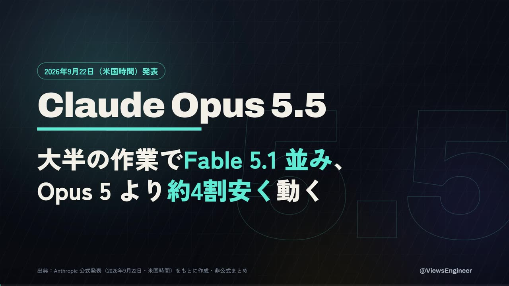
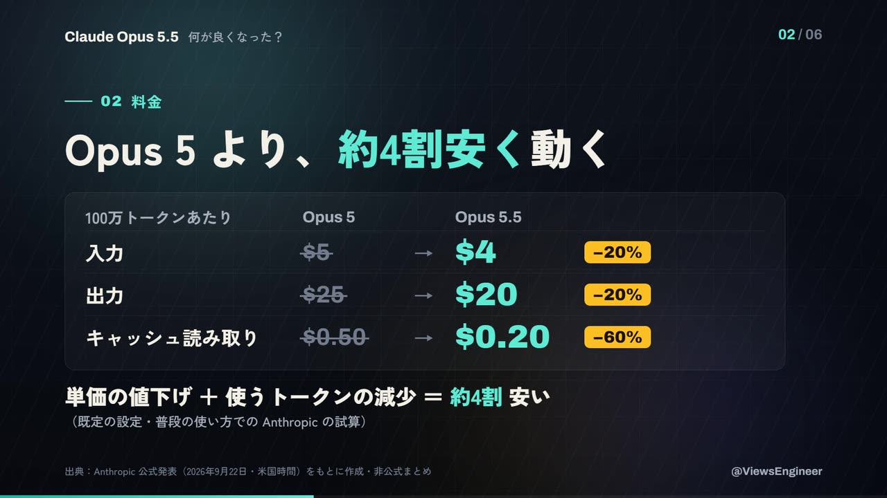
一次情報を1回だけ取り、そこから根拠台帳を作ります。X用とShortsは台帳を共有して、別々の工程で作り、 最後に同じ審査を通します。事実の審査に落ちたら、書き出しからやり直しです（X用は7回、Shortsは5回書き出しました）。
__setTime(t) で任意の時刻を再現できる。AIエージェント（Claude Code）に送った文章は、下の3つと、エージェントから来た質問への回答だけです。 緑の番号がエージェントからの質問、赤い番号が公開の指示にあたります。
「投稿して」の時点で、人間は最終の文面をまだ見ていません。だから公開の判断を、人間の目ではなく 審査の合否（事実の中程度以上が0件）に置きました。次の章からが、その中身です。
新しいモデルの話なので、エージェント自身の知識はあてになりません（学習の時点より後の発表です）。 そこで、使う事実を全部台帳に登録し、台帳に無い数字は画面にも本文にも書かない、という決まりにしました。
{
"id": "L01",
"ja": "大半の作業で Fable 5.1 並みの性能。Opus 5 より約4割安く動く",
"values": ["40%", "4割"],
"quote": "It performs at the level of Claude Fable 5.1 on most work and costs 40% less to run than Opus 5.",
"source": "announce.txt",
"reading": "on most work = 大半の作業で。全作業ではない。"
}台帳を検査するスクリプトは、2つのことだけをします。
quote が、保存した原文にそのまま存在するか（空白と引用符の揺れだけ吸収）。values にあるか。モデル名の版数（5.5 など）は先に落とす。検査が通っても、検査そのものが甘ければ意味がありません。そこで、誤った文を6つ作って照合器に通しました。
| 混ぜた誤り | 正しくは | 結果 |
|---|---|---|
| Opus 5.5 は 66.5% | 66.4% | 検出 |
| Opus 5 より5割安い | 4割 | 検出 |
| 18本中17本 合格 | 16本 | 検出 |
| $0.25 | $0.20 | 検出 |
| 6時間枠 | 5時間枠 | 検出 |
| 出力が40%速い | 30%以上 | 見逃し |
最後の1つは、「40%」が台帳に（費用の値として）存在するので素通りします。 数値の照合は「その値がどこかにあるか」しか見ていないので、正しい値を別の文脈で使うと捕まりません。 これは照合器を直せば済む話ではなく、文を読む担当が別に要る、ということです（07）。
Xの動画は最初ミュートで自動再生されるので、音がなくても全部伝わる形にしました。
画面は1枚のHTMLで、全部のアニメーションを時刻 t の関数として書きます。
こうすると、Playwrightで1/30秒ずつ時刻を進めて撮るだけで、何度書き出しても同じ絵になります。
function setTime(t) {
// 背景の模様・ぼかしの光は、どの時刻でも少しずつ動く（静止判定の対策）
$('grid').style.transform = `translate(${(t * 16) % 80}px, ${(t * 9) % 80}px)`;
for (const sc of SCENES) { // 8場面。data-s〜data-e の間だけ表示
const on = t >= sc.s && t < sc.e;
sc.el.style.visibility = on ? 'visible' : 'hidden';
if (on) for (const it of sc.items) animItem(it, t - sc.s); // 出現・棒・数え上げ
}
}
window.__setTime = setTime; // 撮影側は evaluate("t => __setTime(t)") → screenshotX用動画の時間割。場面の切れ目・和音の変わり目・ドラムの入りを全部、120BPMの拍（0.5秒刻み）にそろえた。効果音は画面の要素が出る時刻と同じ式から計算している。
エージェントは音を聴けません。そこで帯域ごとのエネルギーを測りました。 1回目の合成は16kHz帯が強く、スマホのスピーカーでシャリシャリ聞こえる形でした。 ハイハットを7.5〜12kHzに絞って音量を下げ、16kHz帯を −22.1dB → −28.3dB にしています（最大の帯を0dBとした相対値）。
5〜28秒のオクターブ帯エネルギー（最大の帯を0dB）。低音の山（63Hz）はそのまま、上の2帯だけを下げた。最終のミックスは -14.1 LUFS／ピーク -2.8 dBFS。
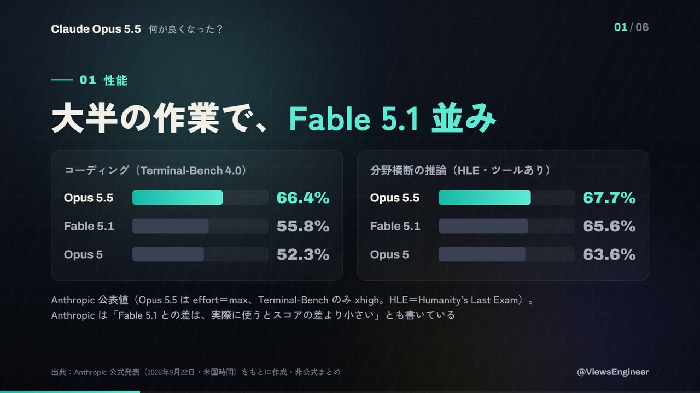
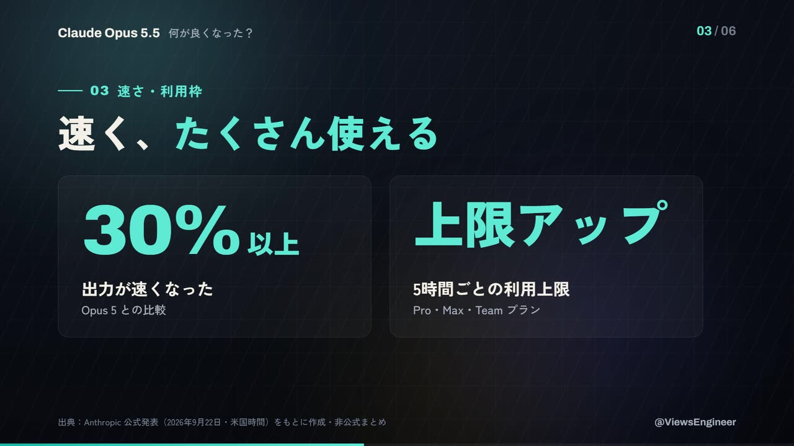
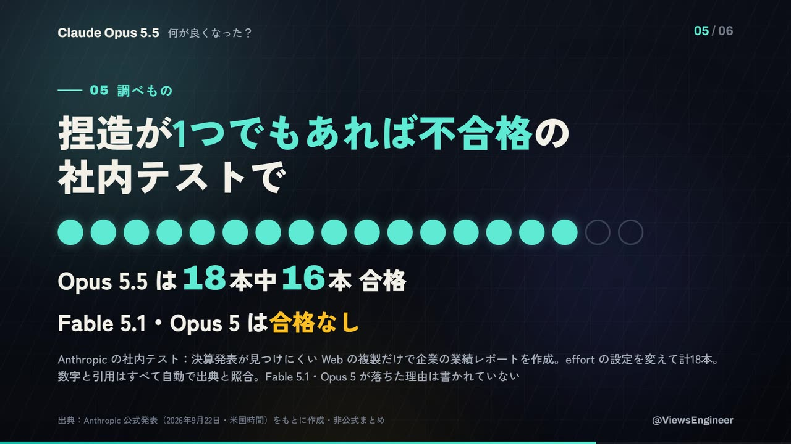
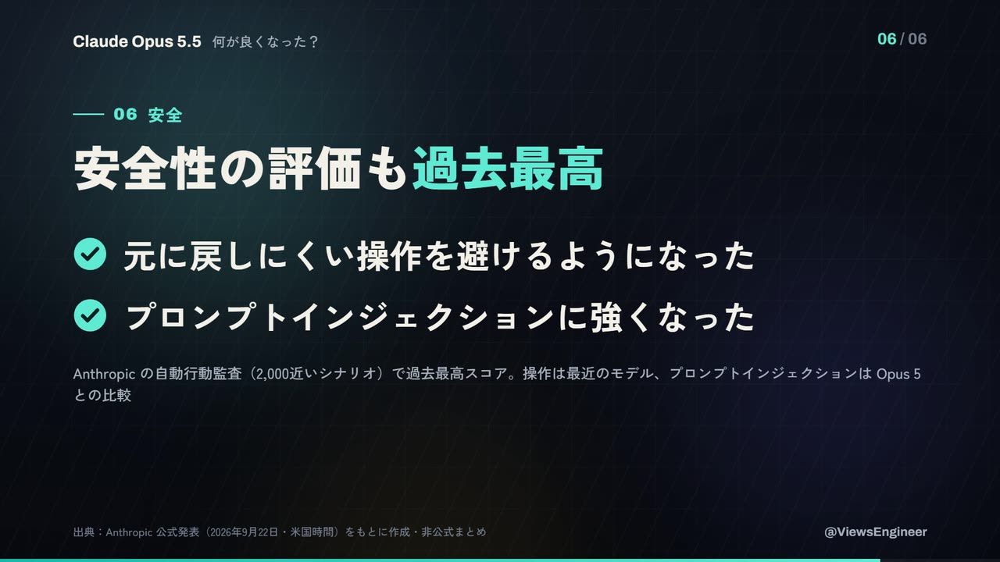
Shortsは新しく作らず、第13回まで続いている「1分AIニュース」の手順にそのまま乗せました。 エージェントは最初に既存のスクリプトと過去回の台本を読み、同じ形で #14 を書いています。 表紙で結論を言い切り、主役の数字を1つに絞るのが、このシリーズの型です。
| # | スクリプト | やること | 止める事故 |
|---|---|---|---|
| 1 | add_ep14.py → build_one.py | 画面の文字・読み上げ（かな）・字幕を1話分書き、文字数の上限を検査 | 器から文字があふれる |
| 2 | check_yomi.py | VOICEVOXの読み（カナ）を取り出して、誤読の型と照合 | 「十八本」を「じゅうはちほん」と読む |
| 3 | synth_long.py | ずんだもんで合成。文面のハッシュでキャッシュ | — |
| 4 | acts_one.py | 声の長さから、場面の切り替え時刻を決める | 録り直すたびに場面がずれる |
| 5 | mix_long.py | BGMを声の下に沈めて、音圧を -14±1.5 LUFS に | 無音の穴・音割れ |
| 6 | check_one.py | 全場面の要素の座標を取り、安全域・重なり・はみ出し・字の小ささを検査 | 字幕がShortsのUIに隠れる |
| 7 | render_one.py | 1,343枚を撮ってmp4に | — |
| 8 | qc_video.py | 尺・解像度・音声形式・音圧・冒頭の輝度・静止 | 暗転で始まる・止まって見える |
| 9 | build_thumb_one.py | 16:9のサムネを同じデータから作り、重なりを検査 | 見出しと数字が重なる |
| 10 | build_meta14.py | 題名・説明文・タグ。説明文の数字も台帳と照合 | 本編と説明の数字の食い違い |
| 11 | upload_to_youtube.py | 公開で投稿してサムネを設定 | — |
| 12 | ai_news_playlist.py | シリーズの再生リストに追加 | — |
| 13 | oEmbed ＋ API | チャンネル名・ジャンル・公開状態・処理完了・/shorts/ のURL | 別チャンネルへの誤投稿 |
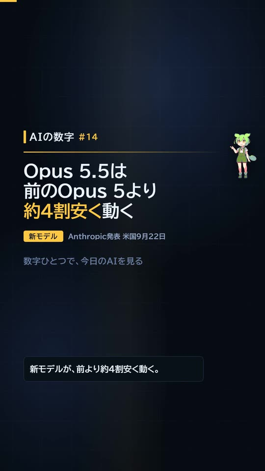
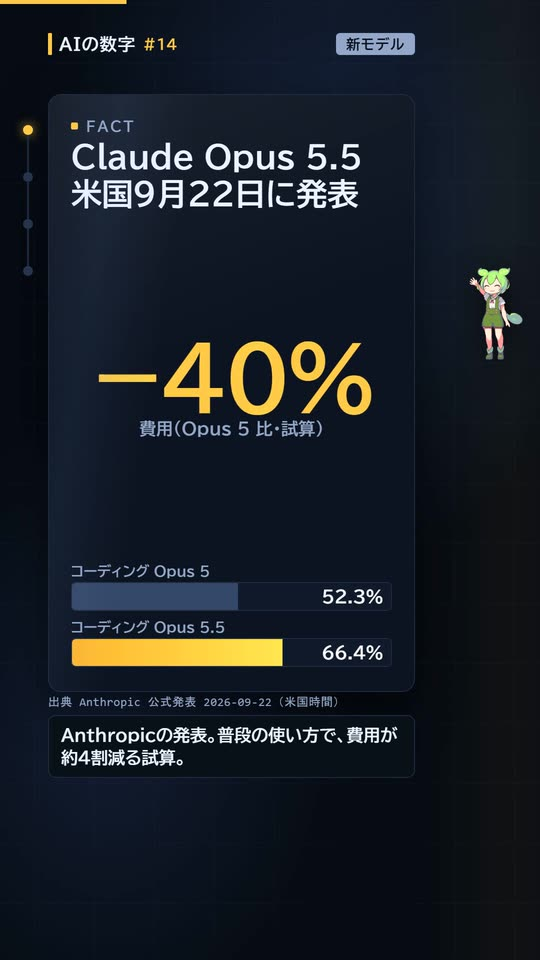
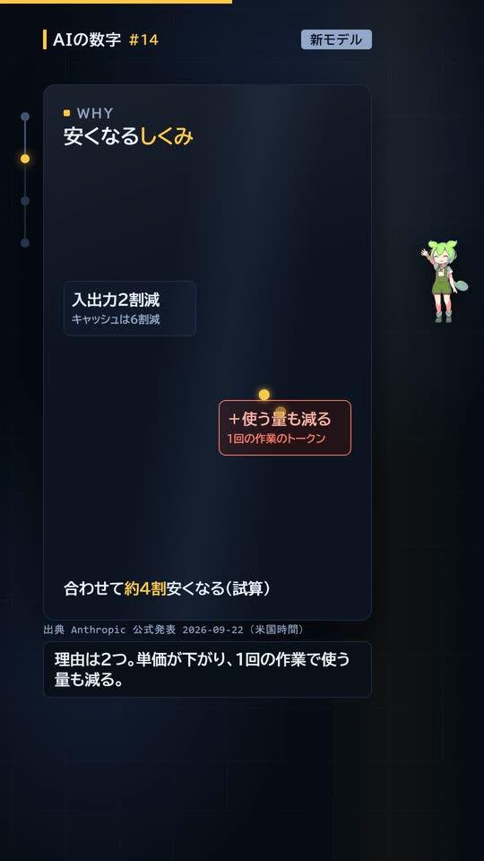
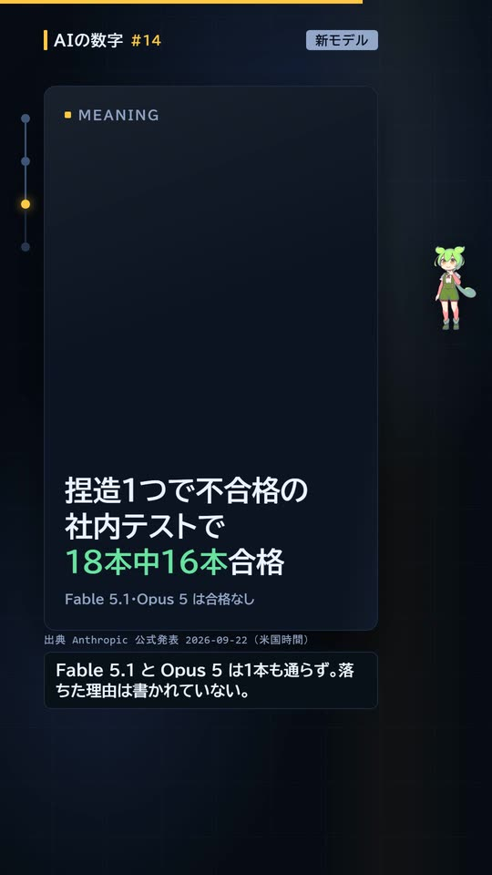
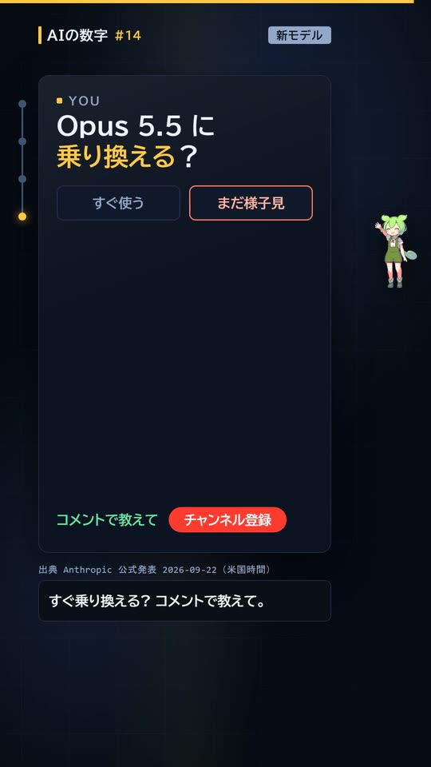
検査は4層に分かれています。下の層ほど機械的で速く、上の層ほど意味を読みます。 どの層も、何かを確実に捕まえ、何かを確実に素通りさせます。素通りの側を知っておくことが、層を重ねる理由です。
審査は観点ごとに別のエージェントに分けました。1体に全部を見させると、平均的な答えしか返ってこないからです。 指示は「良い点は書かず、直す点だけ」。そして事実の担当（C3）が落としたら、他が満点でも出さない。
審査の点数が一番高かったのは、1行目で一番意外な細部（捏造テスト）を出す案でした。 でも読者は、まず何の話で、全体としてどう変わったのかを知りたい。細部の意外さは、全体像を言った後でないと効きません。 点数の高い案ほど入口が細部に寄っていたので、入口だけは点数で決めないことにしました。
見つかった「中」の6件を、直す前と後で並べます。
at the level of Claude Fable 5.1 on most work。また「安い」だけだと単価の話に読めるが、単価の下げ幅は20%。the gap … is narrower than these scores suggest とある。In one internal test、Across different effort settings、where the earnings release was hard to locate。where any invented figure or quote would have failed と書くだけで、2モデルが落ちた理由は書いていない。並べると「捏造した」と読める。Cache reads … 60% less。at default settings）での試算、66.4% は xhigh effort での最高スコア。安くした設定で高得点が出たように読める。「低」の7件は、原文の中の食い違い（別の箇所で「数千のシナリオ」と「2,000近いシナリオ」）、棒グラフの目盛り、発表日が米国時間であること、「取り返しのつかない」→「元に戻しにくい」、「利用上限」→「5時間枠」、表紙に比較の相手がないこと、注記の主語でした。
既定の設定の数字と、最高設定の数字を「なのに」で結ぶ。どちらの数字も台帳にあるので、照合は通る。（⑥）
「−20%＋α＝4割」のように、抜けた項目の分を残りに押しつける。値は全部正しい。（⑤②）
本物の二文を並べただけで、原文にない因果が生まれる。削るのではなく「書かれていない」と書き足して止める。（④③①）
どれも引用の照合（L1）と数値の照合（L2）を通った後に見つかりました。 照合は「その文字列がどこかにあるか」を見るもので、「その文が主張を支えているか」は見ていません。 後者は、条件を付けて読み直す別の担当にしか見つけられませんでした。
事実とは別に、見た目の欠陥も同じやり方で見つけています。担当が見つけたもの、自分でフレームを見て見つけたもの、検査が見つけたものの3系統です。
| 欠陥 | 見つけたのは | 直し方 |
|---|---|---|
| 注記の字がスマホの360px表示で約5px | フック・形式の担当 | 25→28pxにし、要点は見出しの大きさへ移した |
| 表紙で、主張より型番の字が大きい | フック・形式の担当 | 型番 178→132px、主張 74→92px |
| 全部の文字が見えている時間が、どの場面も3秒未満 | フック・形式の担当 | 文字が出る遅れを0.6倍、動きの長さを約0.7倍に。効果音の時刻も同じ式で直した |
| 料金の注記が、下の出典の帯に重なった | 自分でフレームを見て | 行の高さを詰めて注記を式の行にまとめ、全場面の余白を測る検査を追加（最小71px） |
| Shortsの見出しで「表」の1字だけが3行目へ | 自分でフレームを見て | 「米国9月22日に発表」に短縮 |
| 「18本中／16本合格」が途中で割れる | 自分でフレームを見て | 改行位置を指定して3行に |
| 小さな箱の中で「キャッシ／ュ−60%」 | 自分でフレームを見て | 「入出力2割減／キャッシュは6割減」に言い換え |
| サムネの見出しと数字が重なる | サムネの重なり検査 | 字の大きさと数字の位置を調整（4回目で通過） |
| 捏造テストの場面が19.4秒止まって見える | 本編の担当 | 読み上げを短くして15.9秒に |
YouTube側の審査は、点数で投稿を止めない運用です（点数は直しても上がり続けないことを、以前の回で実測しています）。 機械で測る必須項目が全部通れば出し、担当の指摘は「まだ直せる所のリスト」として使いました。 サムネは22/40、本編は25/40からの修正です。
時刻はファイルの作成時刻・投稿IDの時刻・YouTube APIの公開時刻から取った。Shortsの作業は「投稿して」の指示の後に始めている。
書き出しは1回あたり、X用の975枚が約1分40秒〜2分40秒、Shortsの1,343枚が約1分〜1分半です（PCの負荷で変わります）。 時間の大半は書き出しではなく、審査を待って直す往復に使っています。 ただ、その往復で見つかった6件は、どれも投稿した後では取り消せない種類の誤りでした。
def norm(s):
s = s.replace("’", "'").replace("“", '"').replace("”", '"')
return re.sub(r"\s+", " ", s).strip()
def quote_found(quote, source_text): # L1: 引用が原文にあるか
return norm(quote) in norm(source_text)
NUM = re.compile(r"\$?(?:\d{1,3}(?:,\d{3})+|\d+)(?:\.\d+)?(?:%|割|時間|本|万)?")
def numbers_in(text): # L2: 画面・本文の数字を全部抜く
for p in NAME_PATTERNS: # 「Opus 5.5」などの版数は先に落とす
text = re.sub(p, " ", text)
return [m.group(0) for m in NUM.finditer(text)]
# 自己テスト：捏造した引用を通さないこと
assert quote_found("costs 40% less to run", text)
assert not quote_found("costs 50% less to run", text)for (const sc of document.querySelectorAll('.sc')) {
window.__setTime(+sc.dataset.e - 0.4);
let maxBottom = 0;
for (const el of sc.querySelectorAll('*')) {
const r = el.getBoundingClientRect();
if (r.width && r.height) maxBottom = Math.max(maxBottom, r.bottom);
}
// 出典の帯の上端との差が 24px 未満なら失敗
}BPM, CUTS = 120.0, [3.0, 7.5, 12.5, 16.5, 20.5, 25.0, 29.5] # 全部 0.5秒の倍数
CHORDS = [(0.0, 3.0, "Gmaj7"), (3.0, 7.5, "D"), (7.5, 10.0, "Bm7"), (10.0, 12.5, "Gmaj7"), ...]
# パッドは絶対秒の立ち上がり/減衰で、次の和音と必ず重ねる（切れ目で音量の谷を作らない）
# 効果音は、画面の要素が出る時刻と同じ式：at = scene_start + data_d| 用途 | もの |
|---|---|
| エージェント | Claude Code（モデルは発表されたばかりの Claude Opus 5.5 自身） |
| 一次情報 | Anthropic「Introducing Claude Opus 5.5」、製品ページ、開発者ドキュメント（移行ガイド） |
| 画面 | HTML／CSS／SVG、Playwright（撮影）、ffmpeg（結合・検査） |
| 音 | X用：numpy／scipy で合成したBGM（外部素材なし）。Shorts：VOICEVOX（ずんだもん）と、ピアノ素材集「君の音。」vol.3 より「行こう」 |
| 検査 | 自作の照合・検査スクリプト、別エージェント（観点別に9回） |
| 公開 | X API、YouTube Data API、oEmbed |